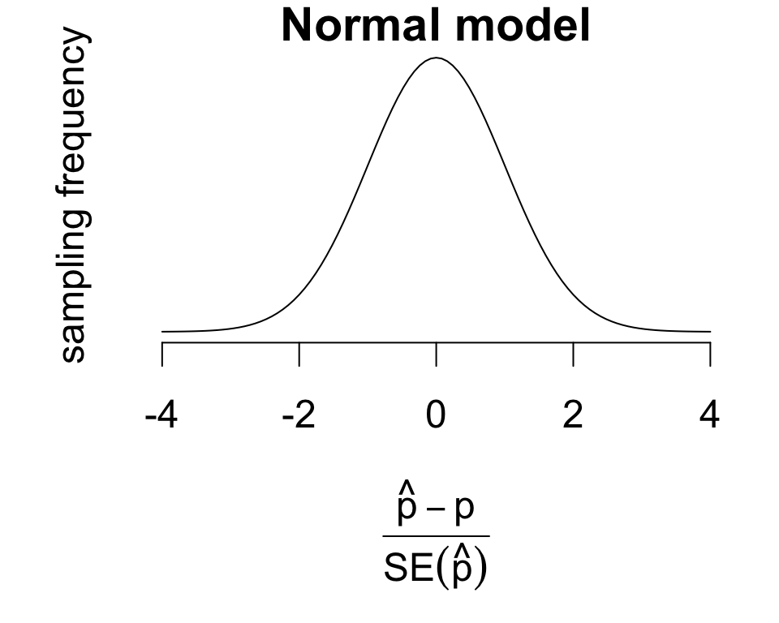

[lecture/discussion] Intro to CDA: inference for one and two proportions
[lab] 3 case studies
Loose end 1: practice problem
Data are standardized lengths of the anterior adductor muscle (AAM) of Mytilus trossulus mussels from five populations.
Estimate mean AAM lengths for each population and test for differences between populations. If differences are determined to be significant, determine which populations differ significantly and provide interval estimates for the differences.
Loose end 1: practice problem
Summaries
boxplot(aam.length ~ location, data = mussels)

mussels |>group_by(location) |>summarize(mean =mean(aam.length), sd =sd(aam.length), n =n())
How much data should I collect to detect differing means with a target power level?
To perform sample size power calculations, one needs:
number of groups
target significance level (\(\alpha\))
target power level
guess or prior estimate of variance ratio \(\frac{\text{group variation}}{\text{error variation}}\)
To detect means that differ among 5 groups with half of the error variability with 90% power:
power.anova.test(groups =5, sig.level =0.05, power =0.9, within.var =1, between.var =0.5)
Balanced one-way analysis of variance power calculation
groups = 5
n = 8.711259
between.var = 0.5
within.var = 1
sig.level = 0.05
power = 0.9
NOTE: n is number in each group
Review: categorical data
A variable is categorical if its values are one of several categories.
What we have seen so far:
frequency distributions for one categorical variable
contingency tables for two categorical variables
use of categorical variables for grouping in inference for two or more means
Inference for categorical data has a different flavor:
Inferential techniques for categorical data analysis depend on how many variables and how many categories per variable.
We will distinguish two broad settings:
[binomial data] Two categories
[multinomial data] More than two categories
These get their names – binomial and multinomial – from the probability models that describe the frequency distributions.
We will focus on inferences for population proportions from binomial data.
On binomial proportions
Inference for categorical data focuses on population proportions
Consider the binomial data setting:
a single categorical variable with two categories
one category represents an outcome, trait, or property of interest
The population proportion is the frequency of occurrence of the category of interest.
\[p = \frac{\# \text{ total occurrences}}{\text{population size } N}\]
If an individual is selected at random, \(p\) also gives the probability of an occurrence.
Example binomial data:
ID
Diabetes
62804
No
62588
No
70730
Yes
68548
Yes
Estimating proportions
Consider using the diabetes data to estimate prevalence.
data are a random sample
so sample statistics should approximate population statistics
sample proportions provide estimates of population proportions
Diabetes data summary
No
Yes
row.sum
count
443
57
500
proportion
0.886
0.114
1
We’ll formalize this as estimating the population proportion\[p = \frac{\# \text{ individuals with diabetes}}{\text{total population size } N}\] Using the sample proportion\[\hat{p} = \frac{\# \text{ respondents with diabetes}}{\text{sample size } n}\] So \(\hat{p} = 0.114\) estimates the prevalence of diabetes (population proportion \(p\)).
And reject when \(Z\) is large in the direction of the alternative.
Under \(H_0\), the sampling distribution of \(Z\) is approximated by a normal model.
For instance, to test whether diabetes prevalence exceeds 10%: \[Z = \frac{0.114 - 0.1}{\sqrt{\frac{0.1\times 0.9}{500}}} = 1.043\]
Inference in R
There are two steps to performing the appropriate inference in R:
Format the variable of interest as a factor with the category of interest as the first level
Construct a table of the frequency distribution
Pass the table to prop.test()
Remarks about output:
X-squared gives \(Z^2\)
correct = F performs the test without continuity correction
The test from the previous slide:
# 1. construct factordiabetes <-factor(nhanes$Diabetes, levels =c('Yes', 'No'))# 2. store tablediabetes.tbl <-table(diabetes)# 3. pass to prop.testprop.test(diabetes.tbl, p =0.1, alternative ='greater', correct = F)
1-sample proportions test without continuity correction
data: diabetes.tbl, null probability 0.1
X-squared = 1.0889, df = 1, p-value = 0.1484
alternative hypothesis: true p is greater than 0.1
95 percent confidence interval:
0.09266984 1.00000000
sample estimates:
p
0.114
Exact inference
The normal model is an approximation.
The test can also be performed using the exact sampling distribution obtained from a binomial probability model.
binom.test(x =57, n =500, p =0.1, alternative ='greater')
Exact binomial test
data: 57 and 500
number of successes = 57, number of trials = 500, p-value = 0.1659
alternative hypothesis: true probability of success is greater than 0.1
95 percent confidence interval:
0.0913675 1.0000000
sample estimates:
probability of success
0.114
Inputs:
x gives the number of occurrences of the category of interest
n gives the sample size
Continuity correction
The approximation error for the normal model may be adjusted using a “continuity correction”
Idea: adjust the test statistic slightly for a more conservative test.
prop.test(diabetes.tbl, p =0.1, alternative ='greater', correct = F)
1-sample proportions test without continuity correction
data: diabetes.tbl, null probability 0.1
X-squared = 1.0889, df = 1, p-value = 0.1484
alternative hypothesis: true p is greater than 0.1
95 percent confidence interval:
0.09266984 1.00000000
sample estimates:
p
0.114
prop.test(diabetes.tbl, p =0.1, alternative ='greater', correct = T)
1-sample proportions test with continuity correction
data: diabetes.tbl, null probability 0.1
X-squared = 0.93889, df = 1, p-value = 0.1663
alternative hypothesis: true p is greater than 0.1
95 percent confidence interval:
0.09176378 1.00000000
sample estimates:
p
0.114
Notice that the correction (right) results in a test that much more closely matches the exact test.
Your turn: sleep trouble
Use the NHANES data to estimate the proportion of U.S. adults reporting sleep trouble. Test whether at least 20% of U.S. adults report sleep trouble.
Compute point estimate and standard error
Perform the hypothesis test
write the hypotheses
calculate the value of the test statistic
record the \(p\)-value
Construct an interval estimate
# to get you startedtrouble <-factor(nhanes$SleepTrouble, levels =c('Yes', 'No'))trouble.tbl <-table(trouble)
Having sleep trouble?
Yes
No
139
361
Comparing two proportions
Inference on the difference between proportions uses substantially similar methods
Vitamin C experiment
Cold
NoCold
n
Placebo
335
76
411
VitC
302
105
407
vitamin C and placebo treatments were randomly allocated to 818 volunteers
volunteers took treatments daily for a cold season
study recorded how many volunteers came down with a cold
Consider inference on the difference
\[p_\text{placebo} - p_\text{vitamin C}\]
Inferences based on groupwise estimates:
point estimate: \(\hat{p}_\text{placebo} - \hat{p}_\text{vitamin C}\)
standard error: \(\sqrt{SE^2(\hat{p}_\text{placebo}) + SE^2(\hat{p}_\text{vitamin C})}\)
Under \(H_0\), the sampling distribution of \(Z\) is approximated by a normal model.
reject when \(Z\) is sufficiently large in the direction of the alternative
Upper-sided test for vitamin C data:
Vitamin C example in detail
Sample proportions:
Cold
NoCold
Placebo
0.8151
0.1849
VitC
0.742
0.258
Hypotheses \[\begin{cases} H_0: p_\text{placebo} \leq p_\text{vitaminC} \\ H_A: p_\text{placebo} > p_\text{vitaminC} \end{cases}\] This corresponds to testing whether vitamin C reduces the probability of getting a cold.
Construct a table of the frequency distribution by group
outcome/trait of interest should be first column
groups should be rows
Pass to prop.test()
Identify at left:
point estimates
test statistic
\(p\)-value
confidence interval
# 1. construct tablecold
Cold NoCold
Placebo 335 76
VitC 302 105
# 2. pass to prop.testprop.test(cold, alternative ='two.sided', correct = F)
2-sample test for equality of proportions without continuity correction
data: cold
X-squared = 6.3366, df = 1, p-value = 0.01183
alternative hypothesis: two.sided
95 percent confidence interval:
0.01636477 0.12977607
sample estimates:
prop 1 prop 2
0.8150852 0.7420147
Your turn: two cases
Researchers categorized 3,112 individuals in American Samoa according to whether they were obese and recorded whether subjects had cardiovascular disease (CVD).
Deaths
NonDeaths
Obese
16
2045
NotObese
7
1044
Test for a difference in disease rates between obese and non-obese populations, and produce an interval estimate for the difference in proportions.
Researchers identified 86 lung cancer patients and 86 controls (without lung cancer), and categorized them according to whether they were smokers or non-smokers.
Smokers
NonSmokers
Cancer
83
3
Control
72
14
Test for a difference in the proportion of smokers among cancer patients compared with controls, and produce an interval estimate for the difference.